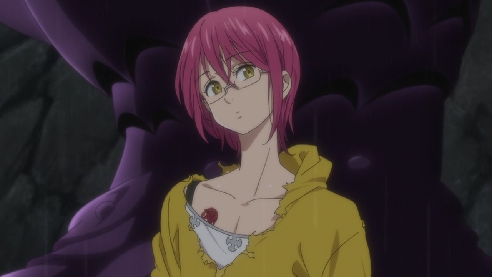
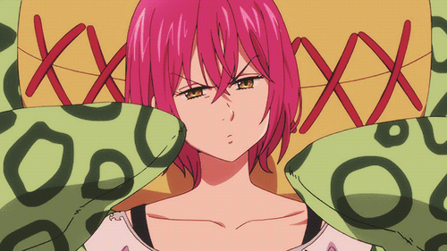

GOWTHER
Gowther「ゴウセル」 is a member of the Seven Deadly Sins, also known as the Goat's Sin of Lust. Gowther was revealed to be a doll, created by a great wizard. His Sacred Treasure is the Twin Bow Herritt, which he uses in conjunction with his inherent power, Invasion.
Gowther has amber eyes and dark red hair (sometimes depicted as magenta) that reaches just past his jaw. His usual attire consists of a gray long-sleeved shirt underneath a white sleeveless top as well as a pair of dark pants and short boots. After Bartra made him dress like a maid, Gowther adopted an unusual habit of wearing women's clothes. Gowther was created in the image and likeness of the woman his creator loved, but to feel no attraction for his creation, he gave it the body of a man. He has a very feminine face and as such can be mistaken for a girl. Gowther also wears a pair of glasses with light frames and apparently cannot see without them. This was first discovered when he disguised himself as Armando. Gowther also has the ability to change aspects of his appearance, although he is limited to only his hairstyle and skin color.[1] In flashbacks and on his wanted poster, Gowther is depicted as a large suit of armour, although he is still smaller than people of the Giants' Clan. His face is never seen, instead he is only ever seen wearing a set of full silver body armour with a helmet featuring a pair of horns, one of which is broken. The most notable part of his armour are his massive spiked metal shoulder plates. His Seven Deadly Sins Goat symbol is located on the right side of his chest.